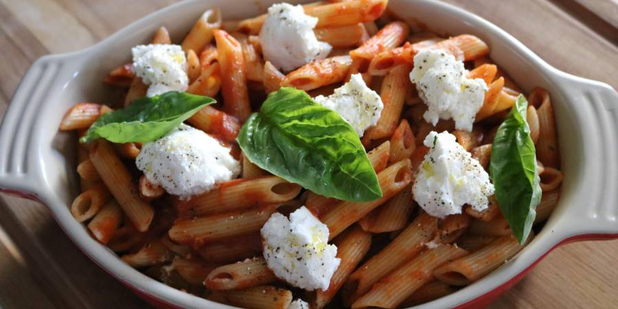
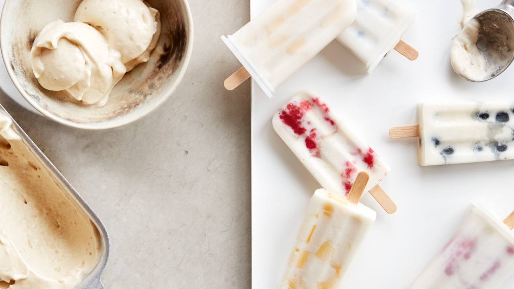
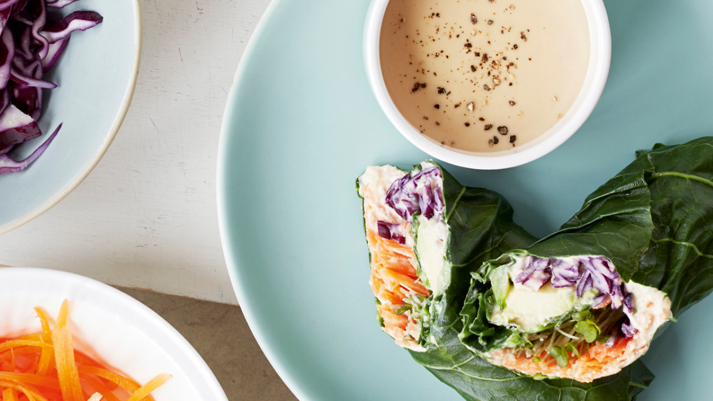

Gordon's simple marinara
view recipe

Banana ice cream
view recipe

Ramsay's reputation is built upon his goal of culinary perfection, which is associated with winning three Michelin stars. His mentor, Marco Pierre White, noted that he is highly competitive. Since the airing of Boiling Point, which followed Ramsay's quest of earning three Michelin stars, the chef has also become infamous for his fiery temper and use of expletives. Ramsay once famously ejected food critic A. A. Gill, whose dining companion was Joan Collins, from his restaurant, leading Gill to state that "Ramsay is a wonderful chef, just a really second-rate human being." Ramsay admitted in his autobiography that he did not mind if Gill insulted his food, but a personal insult he was not going to stand for. Ramsay has also had confrontations with his kitchen staff, including one incident that resulted in the pastry chef calling the police. A 2005 interview reported Ramsay had retained 85% of his staff since 1993. Ramsay attributes his management style to the influence of previous mentors, notably chefs Marco Pierre White and Guy Savoy, father-in-law, Chris Hutcheson, and Jock Wallace, his manager while a footballer at Rangers.
Ramsay's ferocious temper has contributed to his media appeal in both the United Kingdom and the United States, where his programmes are produced. MSN Careers featured an article about television's worst bosses, which listed Ramsay as the only non-fictional boss. They cited his frequent loss of his temper and his harsh critiques, notably when he picks on something other than cooking ability, such as calling someone a "chunky monkey".
TV Guide included him in their 2013 list of The 60 Nastiest Villains of All Time. Despite being known for his ferocious temper, Ramsay has been well-received as the host of Masterchef Junior: in contrast to his interaction with adults, Ramsay was shown to be more patient and sensitive to the children featured on the show. Despite his competitiveness and fiery temper, he showed far more understanding and empathy towards children, amateur and special needs chefs (notably Christine Hà on MasterChef), although he continued to offer constructive criticism.
Opened in September 1998, Restaurant Gordon Ramsay was Ramsay's first solo restaurant, located at Royal Hospital Road, London. In 2001, it was voted Top Restaurant in the UK in the London Zagat Survey and was awarded its third Michelin star. He was appointed Officer of the Order of the British Empire (OBE) by Queen Elizabeth II in the 2006 honours list for services to the hospitality industry, but almost missed the award when his plane was delayed. In July 2006, Ramsay won the Catey award for "Independent Restaurateur of the Year", becoming only the third person to have won three Catey awards. Ramsay's two previous Catey awards were in 1995 (Newcomer of the Year) and 2000 (Chef of the Year). The other two triple-winners are Michel Roux and Jacquie Pern. In September 2006, he was named as the most influential person in the UK hospitality industry in the annual Caterersearch 100 list, published by Caterer and Hotelkeeper magazine. He overtook Jamie Oliver, who had been top of the list in 2005. Also in 2006, Ramsay was nominated as a candidate for Rector of the University of St Andrews, but lost at the polls to Simon Pepper. Ramsay's flagship restaurant, Restaurant Gordon Ramsay, was voted London's top restaurant in Harden's for eight years, but in 2008 was placed below Petrus, a restaurant run by former protégé Marcus Wareing. In January 2013, Ramsay was inducted into the Culinary Hall of Fame.